Twenty-two design–build–test–learn cycles across four tracks: the
four-module optogenetic circuit, the constitutive expression vector that
carries the protectant, the hollow-fibre perfusion reactor, and the in-line
photometer we built because nothing we could afford would read a running
culture. Three of the twenty-two are still open, and they are marked.
SectionProject
Written byWet lab, dry lab and hardware
Last updated4 September 2026
StatusDraft
Contents
On this page
This page runs in four tracks. The first two are molecular: the optogenetic
circuit, built as four separate transcription units and then joined, and the
constitutive vector that expresses the protectant without any light at all.
The last two are instruments: the perfusion reactor the bacteria live in, and
the photometer that watches them. Read a track top to bottom and the cycles
are in the order they happened.
What we set out to build, and what was fixed before cycle one
ReLeaf grows engineered Bacillus subtilis inside a hollow-fibre
membrane, feeds it green light when a plant is under stress, and lets the
protectant the cells make cross the membrane into the root zone while the
cells themselves stay behind. Two things had to exist for that to be more
than a diagram. A light-responsive circuit in B. subtilis, and a
vessel that keeps a culture alive and instrumented for long enough to be
worth switching on.
The optogenetic system is four transcription units, not one construct
We built the light switch on the cyanobacterial CcaS–CcaR two-component
system, which senses green light near 520 nm and drives the
PcpcG2 promoter. CcaS is a photoreceptor histidine kinase and it
does not work on its own: it needs phycocyanobilin as its chromophore, and
B. subtilis does not make any. So the system is four parts, and
they were designed, assembled and screened as four separate transcription
units before anything was joined:
A · Chromophore supply
Ho1::pcyA — heme oxygenase and PCB ferredoxin
oxidoreductase, run as one operon, so the chassis makes its own
phycocyanobilin.
B · Light sensor
CcaSm3 — the photoreceptor kinase, built
twice, under PliaG and under PlepA, because we did
not know what expression level it wanted.
D · Response regulator
CcaR — the partner that CcaS phosphorylates, and the
protein that actually binds PcpcG2.
I · Output
PcpcG2-veg driving a secretion-tagged cargo —
csn::ACCD, csn::LEA, and a chromoprotein
reporter, csn::AmilCP, for reading the switch by eye.
The letters are not decoration. They are the position labels used on every
gel in the lab record and in every construct name below, so a clone called
ACDI is unambiguous: chromophore module A, the
PlepA sensor, CcaR, and the ACC-deaminase output. That vocabulary
is used identically on Parts and
Results.
Three constraints were settled before the first assembly, and they set the cycles
Marburg 2024 wrote its assumptions down before cycle one so a reader
could judge the design against them instead of against whatever happened to
work. Ours were these.
The chassis is B. subtilis, and we assumed it would recombine.B. subtilis is naturally competent and recombination-proficient,
so four copies of one terminator in a single plasmid looked like a
substrate. That assumption drove cycle 5 of the
circuit track, and cycle 5 is also where an expert told us the
assumption was wrong. It is listed here because it shaped the work, not
because it survived.
The vessel had to contain the organism, not just hold it.
The pivot on 15 April committed us to keeping engineered bacteria inside
a sealed vessel and letting only the product out. That is a membrane
specification, and it is why the reactor is hollow-fibre and not a
stirred tank.
School budget, school lab. A commercial in-line OD sensor and a
chlorophyll fluorometer were both priced and both dropped. The
fluorometer went on 11 May on staffing, not feasibility; the OD
sensor we built instead.
Key achievements
22
cycles, three still open
Nineteen closed and three unfinished, across four tracks. The three open
ones are marked in red down the left edge and counted in the total
anyway.
434h
unbroken in-line OD600
Eighteen days, 2,671 valid readings, zero samples withdrawn from the
loop, on an instrument we designed and printed ourselves.
4
module Level 2 assembly verified
Two ACDI clones confirmed on 1 September across three
internal junctions, after three consecutive Golden Gate rounds returned
nothing.
1
reactor fault the instrument flagged while it happened
The recirculation pump failed at the start of August. The photometer's
reference channel marked the window untrustworthy as it ran, which is how
the cause was reconstructed afterwards.
Each of those is checkable somewhere below or on a page we link:
Twenty-two cycles, nineteen closed and three open. Every one is a row
in the table below with a non-empty
“what changed next” cell.
A four-module optogenetic circuit assembled and sequence-checked to
Level 2. Three junction PCRs at 375, 632 and 661 bp on
1 September 2026, after the insert-to-vector ratio was changed on
28 August. Three earlier rounds failed completely.
Two instruments built, one of them an instrument nobody sells. A
ratiometric in-line photometer with a 0.2 mm optical path, four
build iterations, and a documented run of 434 hours; and a
hollow-fibre perfusion reactor at version 6. Specifications and
bills of materials are on Hardware.
One containment claim retracted by us, in writing, before anyone asked.
The old reactor specification claimed a 50 kDa cut-off and said the
membrane blocks outer-membrane vesicles. The part we actually bought is
0.2 µm and does neither. We withdrew both claims in week 18
and kept the one that survives: the membrane retains whole
B. subtilis, and a shell-side plate from the very first
reactor run is the evidence.
A cycle changed a design; a repair changed a part
Nineteen is a number worth stating and a bad number to inflate, so here is
the line we drew. Replacing a leaking fitting is a repair. Replacing it
because the previous design's behaviour was measured and found unacceptable
is a cycle. A cycle has to have a question we did not know the answer to,
something built or changed to answer it, a measurement that produced a
number or a scored gel, and a decision that altered what came next. If any of
those four is missing, the work is in the notebooks and not on this page.
Applying that honestly removed several things we had been calling cycles.
Swapping the pump tubing for BPT after the medium leak is a repair, and it
appears inside cycle 1 of the reactor track, not as a cycle of its
own. Re-running a colony PCR because the gel was overloaded is a repair. The
Level 2 assembly failing three times in a row is one cycle, not three,
because nothing about the design changed between attempts — which is
itself the finding.
Every cycle below uses the literal headings Design, Build,
Test and Learn, and adds Leiden 2023's fifth heading,
Redesign, which forces us to write down in words what the next cycle
will change and why. Where two steps were genuinely one step at the bench,
they are merged and the heading says so.
Cycle closed
Closed by a failure we could name
Still open
The twenty-two cycles at a glance
One row per cycle. The last column is the argument of this page compressed
into twenty-two cells: if a row's “what changed next” is empty, the
cycle did not earn its place. Every row is expanded below.
Read roughly four times high. Second blanking failure on this instrument
Hand-entered blank; target still missed
P5
Photometer
Does it survive weeks alone?
Logger and live dashboard, one reading every ten minutes
434 h and 2,671 valid readings; agreement with a benchtop to 0.024 OD
Calibrate on cells, not on TiO&sub2;
P6
Photometer
How much of the optical train is load-bearing?
A build with no paralleling lens and no beamsplitter
Open — not built
Open
The dual-wavelength LED array, DiOPAL, ran its own cycles — the
photon-flux unit error caught before any dose figure was published, and the
decision to sort every LED by hand after finding a 25 % spread across
parts sold as identical. Those are documented where the array is:
Hardware · DiOPAL. They are not
counted in the twenty-two.
Cloning the four modules5 cycles · all closed
Five cycles, and only the first one is about the circuit design. The
other four are about the assembly method, because that is what actually
stopped us. We changed cloning systems once, changed the part carrier
twice, audited our own screening primers, and finished on a
stoichiometry change. The DNA design barely moved.
We write these five together instead of module by module, because the
four modules were never independent. They share a ribosome binding site,
a terminator and, for a while, a promoter, and every problem below hit
all four at once. Ownership was split — the chromophore and output
modules to one member, the sensor and regulator to another — but the
cycles were not.
Circuit · iteration 1 of 5MoClo 2.0, and a shuttle vector we had to build before we could use it
Can a four-module optogenetic circuit be assembled in
B. subtilis using the MoClo 2.0 standard?
DesignMoClo 2.0, and the vector it needed
MoClo 2.0 imposes two things on every part: no internal BsaI site,
and a specific pair of 4 bp overhangs that fix the part's position
in the transcription unit. Primer and fragment design was therefore
mostly bookkeeping — domesticate every internal site, then attach
the correct position-defining overhang to each end.
The harder problem was the destination. We had a shuttle vector,
pNW33N, that moves between E. coli and B. subtilis,
but in the team's own words it is specific in conventional restriction
cloning but not Golden Gate assembly. So before assembling anything we
had to build the vector: clone the sfGFP dropout cassette out of
pJUMP49-2B and into pNW33N, making a MoClo 2.0 Level 2 plasmid
we called pNW33N-L2(sfGFP).
BuildGibson, then digest checks
pNW33N recovered from BCRC and verified, then cut and joined by Gibson
assembly to the pJUMP49-2B PCR product (3 µg/mL digest against
60 µg/mL insert, 50 °C for 30 min, into DH5α).
Coding sequences were ordered on pTwist-Amp-High backbones. Golden Gate
ran at a 2:1 insert-to-vector ratio, selected on kanamycin.
TestThe parts checked out; the assembly did not
Every part verified by digest. No colonies from the assembly.
pNW33N-L2(sfGFP) was confirmed by EcoRI/BtsI on 23 April
and by BsaI on 30 April. The synthesised coding sequences were
confirmed by EcoRI on 4 and 6 June — Csn::AmilCP linearising at
3,051 bp and Csn::AccD at 3,423 bp, both as designed. The
Level 1 assembly is where it stopped:
We initially utilized the MoClo 2.0 standard, but we realized the
resulting quality was quite poor as transformation didn't reveal any
colonies, and the Golden Gate Assembly efficiency was low.
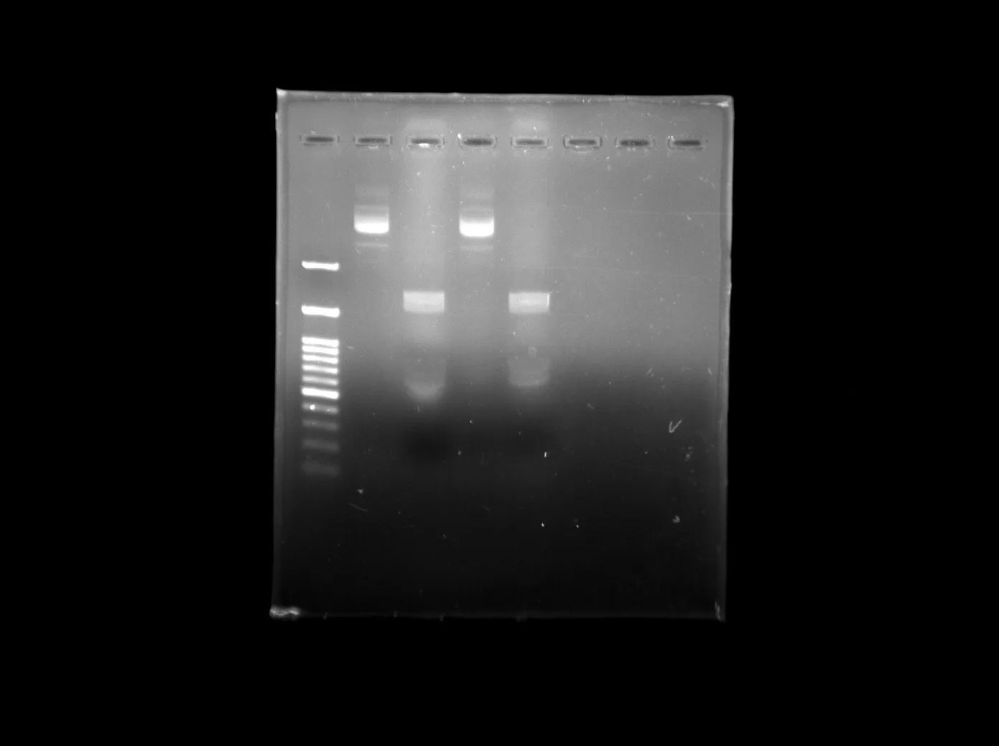
Figure 1. 30 April 2026. pNW33N-L2(sfGFP) clones
C#1 and G#1, uncut and BsaI-digested for two hours, against the 100 bp
+ 3 kb ladder. The shuttle vector we built by hand to make MoClo
possible — and which the SubtiToolKit later turned out to already
contain.
Scaled only. No brightness, contrast or gamma adjustment.
LearnThe method was the bottleneck, and the fix arrived by luck
Nothing was wrong with the parts. The failure was efficiency: with no
colonies to screen, there was no gel to read and no way to tell a bad
overhang from a bad ligation from too little DNA. A team member's
independent write-up from the same weeks reaches the same wall —
the DNA we assembled using Golden Gate Assembly did not yield the desired
results… the most likely of which is that our DNA concentration was
low to start with — which is a diagnosis you can only make when you
have nothing else to go on.
We should say plainly that what unblocked this was not cleverness. A
professor who had worked on the SubtiToolKit's original paper gave us the
kit. Without that we would have spent the summer optimising a
MoClo 2.0 reaction.
One thing from this cycle survived and turned out to be right. The kit's
own shuttle vector, pSTK-EXP-1-sfGFP, is described in its
library sheet as produced from pNW33N adapted for STK — exactly
the vector we had spent April building for ourselves.
RedesignChange the kit, not the parts
Rebuild all four modules in the SubtiToolKit. Keep the part definitions;
change only the assembly grammar and the vectors. The one document that
records the transition is a June forecasting sheet that lists
Module 4-1 (molecular cloning 2.0) and
Module 4-2 (molecular cloning 2.0), then a horizontal rule, then
Module 4-1 (STK) and Module 4-2 (STK).
Circuit · iteration 2 of 5The SubtiToolKit removes a design step, and four positions close in eight days
Does a cloning kit built for B. subtilis remove the step that
was blocking us, or just move it?
DesignOne universal primer tail, two enzymes
The SubtiToolKit is an EcoFlex-derived Golden Gate kit for
B. subtilis, with pre-built Level 0 part vectors and
Level 1 destination vectors carrying sfGFP dropout cassettes. What it
changed for us was primer design. Instead of a bespoke overhang table per
construct, every primer carries the same 29 bp universal tail:
a 5′ spacer, ATATAT, so a restriction enzyme has
something to bind near the end of a linear fragment;
a BpiI site, GAAGAC, for Level 0 entry —
BpiI cuts outside its own recognition sequence, so digestion removes the
tail entirely and leaves a 4 bp overhang that drops the fragment
into pSTK-0 in place of the sfGFP dropout;
a BsaI site, GGTCTC, for Level 1 — whose
inner 4 bp overhang defines the part's position in the
transcription unit.
The two enzymes are not interchangeable and each does exactly one job. The
overhangs are chosen to do double duty where they can: in the chromophore
module's forward primer the Level 1 overhang is TATG,
which carries the start codon of ho1 and marks the 5′ boundary
of the coding sequence in the same four bases.
Every entry in the team's primer table from this point on has the same
value in its Purpose column: Convert MoClo to STK. Sixteen parts,
one instruction.
BuildTwenty kit plasmids in, eight inserts amplified, four positions assembled
On 18 June the kit was minipreped and sized — twenty parts on one
gel, including the four Level 1 destination vectors
(pSTK-1A through 1D-sfGFP), seven Level 0
promoters, pSTK-0AB-PtagC+RBS, the 3P promoter,
RBS0, and the terminators B0015 and
L3S2P21. On 19 June eight inserts were amplified with the
new tails. Golden Gate ran as 20 µL reactions with T4 ligase and
BsaI-HFv2, thirty cycles of 37 °C for one minute against
16 °C for one minute, then 60 °C for five.
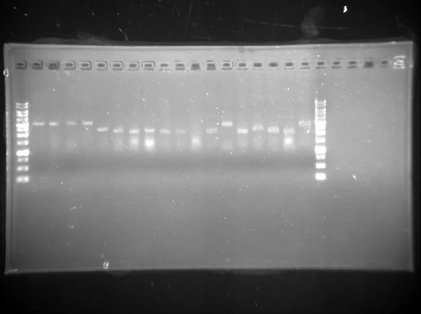
Figure 2. 18 June 2026, the day the kit arrived. Twenty
SubtiToolKit plasmids sized between two 1 kb ladders: the four
Level 1 sfGFP destination vectors, the promoter set, RBS0, the two
terminators and eCFP.
Scaled only.
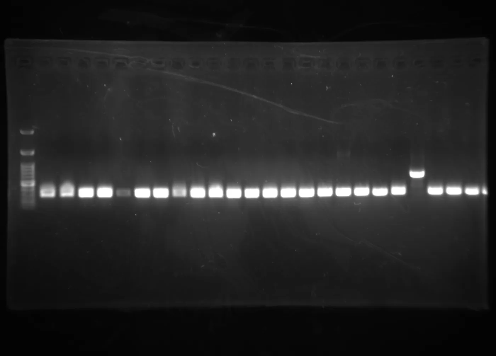
Figure 3. 25 June 2026. Colony PCR across all eight
Level 1 constructs, three colonies each. Seven days after the kit
arrived, the first positives were in hand.
Scaled only.
TestFour of the six positions we needed
Four Level 1 positions gave positive colonies within eight days of the kit arriving, and were sequence-confirmed within a fortnight.
Position
Construct
Positive clone
Colony PCR
Sequenced
B
PliaG–RBS0–CcaSm3–B0015
B2
24 Jun
3 Jul
D
Pveg–RBS0–CcaR–B0015
B2, B4
26 Jun
1 Jul
E
PcpcG2-veg–EEBD–RBS0–csn::AmilCP–B0015
G3
24 Jun
3 Jul
F
Pveg–EEBD–RBS0–csn::AmilCP–B0015
H10
26 Jun
3 Jul
LearnThe kit removed a design step, not a bench step
What made the difference was not a better ligase or a better thermocycler.
It was that the kit already owned the overhang grammar, the dropout
cassettes and the shuttle vector, so the only thing left to get right was
a primer tail we could write once and reuse. We then reused it literally:
the light-sensing module's primers reuse the exact same 29 bp
universal tail that we have already validated on our PCB production module
primers.
Two positions did not come. The csn::LEA pair, under both the
light-driven and the constitutive promoter, never produced a positive clone
in this or any later round.
RedesignStop feeding PCR products into Golden Gate
Every insert going into these reactions was a raw, unsequenced PCR product.
Make each one a verified plasmid first.
Circuit · iteration 3 of 5pGEM-T Easy makes clean donors, and carries the wrong resistance gene
Is a sequence-verified plasmid a better Golden Gate donor than a PCR
product?
DesignVerify the part before you assemble with it
The team's stated reason, from their own outline:
The vector is easier to assemble compared to the PCR product. Written
out: the coding sequences were individually cloned into pGEM®-T
vectors, rather than directly into the pSTK-0-sGFP vector, to generate the
basic parts. Once the plasmids were confirmed by DNA sequencing, they were
ready for Golden Gate assembly.
BuildTA cloning, seven coding sequences
pGEM-T Easy at 50 ng in a 3,015 bp backbone, 3:1 insert to vector,
one hour at room temperature. The 12 June round took PcpcG2-veg
(242 bp) and EEBD–MF001 (274 bp); the 24 June round,
logged as Insert PCR products (MoClo → STK) to pGEM-Teasy, took
Csn:Lea, Csn:AmilCP, Csn:Accd, CcaSm3 and CcaR.
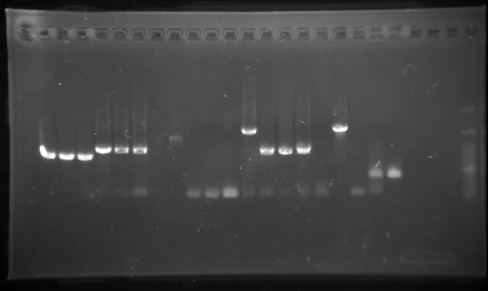
Figure 4. 1 July 2026. Seven coding sequences in pGEM-T Easy,
three colonies each, screened with T7 and SP6 primers: Csn:Lea 811 bp,
Csn:AmilCP 1,000, Csn:Accd 1,372, CcaSm3 1,642, CcaR 937,
Ho1:pcyA 1,726 and PcpcG2–Pveg 412. The step in
band height across the groups is the seven expected sizes.
Scaled only.
TestAll seven cloned; downstream assembly still failed
The intermediate worked as an intermediate and failed as a donor.
Every one of the seven gave product at the expected size on 1 and
3 July, and the constructs were confirmed again by miniprep on
9 July. The Level 1 reactions fed from them did not improve. On
13 July the ligase was changed — Promega's, then a new MEBT4
— and sixteen colonies were screened from each. Both plates are
recorded in the lab's own figure deck with one word: fail.
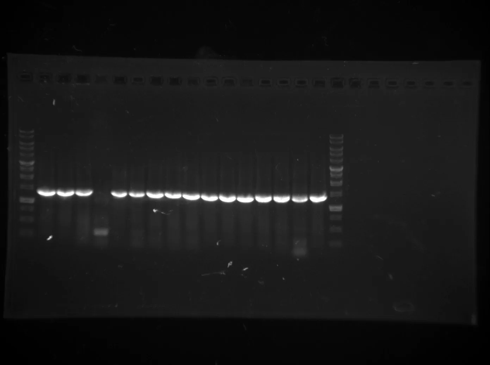
Figure 5. 13 July 2026, and the deck's own verdict on it is
fail. Sixteen colonies of
Pveg–RBS0–Ho1::pcyA–B0015 assembled with a
replacement ligase, expected at 2,231 bp. Fifteen gave a bright,
identical product well below that. A plate where every colony agrees and
none of them is right is not a ligation problem.
Scaled only.
LearnThe donor and the destination share a marker
pGEM-T Easy carries ampicillin resistance. So does every Level 1
destination vector in the kit — pSTK-1A through
1D-sfGFP, and pSTK-EXP-1 — and Level 1
transformations were being plated on ampicillin. A plate selected that way
cannot distinguish a correct assembly from carried-over donor plasmid or
from a religated parent. The team recorded the problem in one line:
Some issue happened because the pGEM-T vector have the same antibiotic
resistant gene as Level1.
This is the only sentence in the archive that states it, and the failure
mode above is our reconstruction from the kit's own selection map, not
something we wrote down at the time. The kit's Level 0 vector,
pSTK-0-sfGFP, is chloramphenicol-selected, which is precisely
the property pGEM-T Easy lacked.
RedesignUse the kit's own Level 0, on a different antibiotic
Drop pGEM-T Easy as the part carrier. Design dedicated Level 0 primers
and assemble the parts into pSTK-0-sfGFP, replacing the
sfGFP dropout, so donor and destination never share a marker again.
Circuit · iteration 4 of 5Level 0 in the kit's own vector, and an audit of the primers we were screening with
With the marker clash removed, are the colony screens we have been reading
actually reading insert?
DesignTrue Level 0, and a check on our own screens
Two changes at once, and they are related. Parts move into
pSTK-0-sfGFP under chloramphenicol, which fixes the selection
problem. And because the previous cycle had spent a fortnight reading gels
that turned out to mean nothing, the screening primer pairs themselves were
put on trial.
BuildLevel 0 parts, from 20 July
The first Level 0 Golden Gate is dated 20 July, into
STK001_pSTK-0-sfGFP at 346 ng/µL and 3,090 bp,
diluted twentyfold. By 26 July the four shared regulatory parts existed
as Level 0 plasmids in their own right: Pveg at
2,361 bp, EEBD at 2,392, RBS0 at 2,113 and B0015 at 2,213.
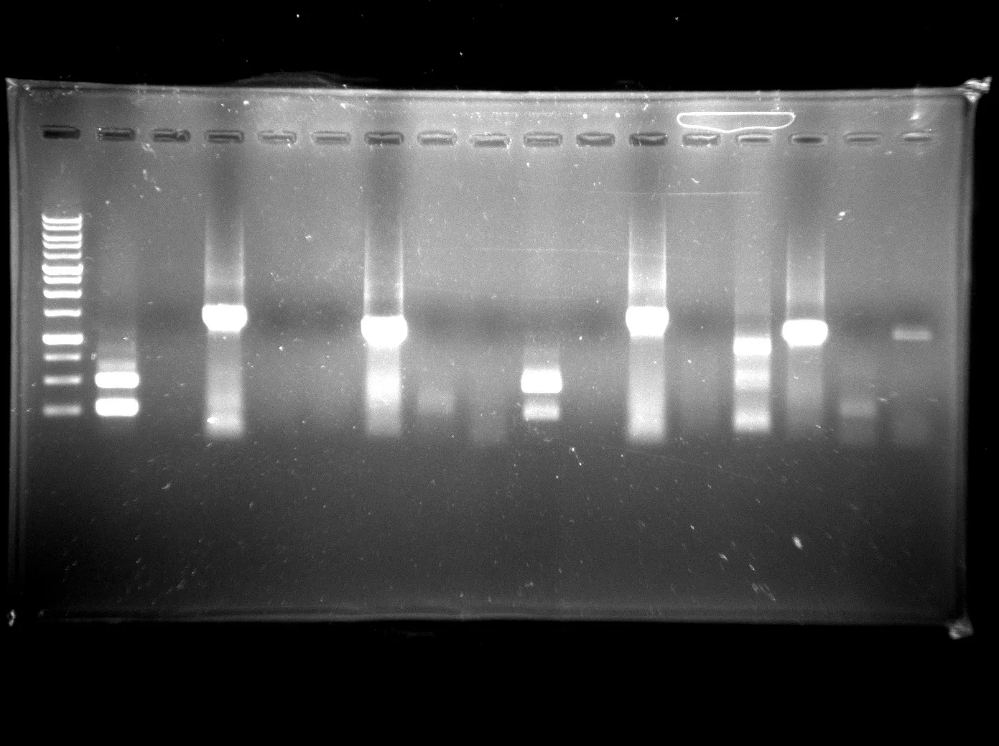
Figure 6. 24 July 2026, the primer audit. The
STK-seq and EXP-seq pairs run three ways
— forward with forward, reverse with reverse, forward with reverse
— each with and without template, old pairs against new. Bands in
the same-orientation and no-template lanes are the finding.
Scaled only.
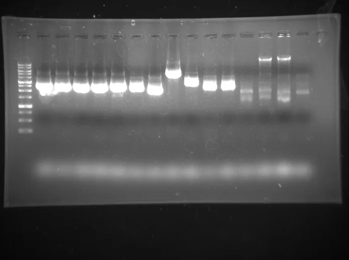
Figure 7. 26 July 2026. Minipreps, ending in the four shared
Level 0 regulatory parts — Pveg, EEBD, RBS0 and
B0015 — now sequence-verified plasmids in the kit's own
chloramphenicol backbone.
Scaled only.
TestThe old primer pairs gave product they should not have
Some of what we had been scoring as insert was primer artefact.
The 24 July audit ran each sequencing primer pair in three
orientations, with and without template. Old pairs against new. Product in
a lane with no template, or with two forward primers, cannot come from an
insert. New pairs were designed and the affected screens re-run — the
chromophore module was rescreened the same week with the BioBrick prefix
against pSTK-seq-rv at 2,111 bp, and this time gave five
positives that held up.
The dropout cassette earned its keep in the same weeks, as a screen rather
than as a cloning step. Clone G2 was scored by digest and the band that came
back was the dropout itself: our enzyme digestion results of clone G2
showed the band size of our dropout cassette, meaning that it was not
successfully cloned and that it was empty.
LearnAudit the instrument before you trust the reading
This is the cycle that we would have skipped if we had been in a hurry, and
it is the one that made the later gels meaningful. A colony PCR is a
measuring instrument, and nobody had calibrated it. Two of the three
cloning failures on this page were diagnosed by a control, not by a
redesign.
We also came out of it with an explicit worry, written down at the time:
We worried about the B sub. recombination issues that might
influence our optogenetic system. The four modules share RBS0 and
B0015, and modules 1 and 3 shared Pveg as well. Four
copies of the same terminator in one plasmid, in a naturally competent host,
looked like a substrate.
RedesignBreak the repeats
Give each module its own promoter, ribosome binding site and terminator.
Circuit · iteration 5 of 5The repeats came out, the recombination premise did not survive, and Level 2 closed on a ratio
Will four transcription units sharing one ribosome binding site and one
terminator assemble and then survive in B. subtilis?
DesignTwo motives, and we wrote them as alternatives
The record is honest about this and we will be too. The team's own
shorthand for the redesign reads try changing promoter, RBS, terminator
→ strength or recombination issue. Two different reasons for
the same change, and at the time we did not know which one we were acting
on.
The strength motive is the one written out in full: sequencing on the
chromophore module showed that our request had no signal, and the
conclusion drawn was about context, not repeats —
A construct that is functional in its original design may not produce the
same level of expression when placed in a different backbone or combined
with different genetic elements. Since adequate PCB production is essential
for CcaS-mediated light sensing, insufficient expression of the Ho1 module
could prevent the system from responding effectively to light.
BuildNew promoters, new terminators, new ribosome binding sites
Module
First build
Second build
1 · chromophore
Pveg – RBS0 – Ho1:pcyA – B0015
PtagC+RBS – Ho1:pcyA – L3S2P21
2 · light sensor
PlepA – RBS0 – CcaSm3 – B0015
PliaG – RBS0 – CcaSm3 – B0015
3 · regulator
Pveg – RBS0 – CcaR – B0015
no change
4 · output
PcpcG2 – RBS0 – csn::cargo – B0015
bkdB cold double → reverted to B0015
The new parts were real work, not a relabelling. Two terminators
(L3S2P21, and a synthesised L3S1P52–L3S2P56
double at 182 bp), two synthetic ribosome binding sites
(MF001 and MF002, 89 bp each, ordered in
pUC57mini), PtagC+RBS and a three-promoter part, and
six alternative constitutive promoters synthesised for a strength ladder
— P43, Pref, PrpsD, PserA,
Pveg and PymdA.
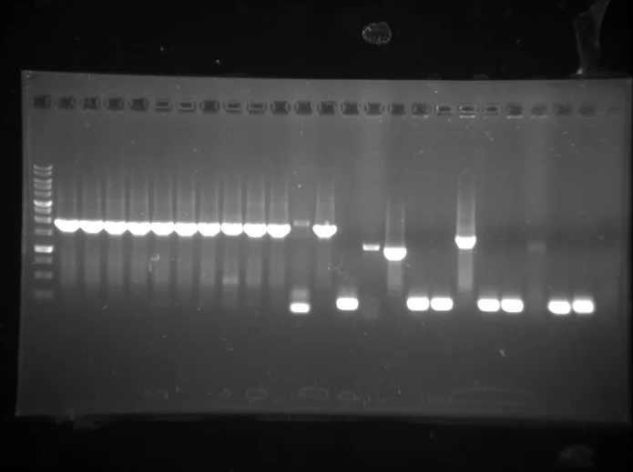
Figure 8. 30 July 2026. The rebuilt chromophore module,
PtagC+RBS–Ho1:pcyA–L3S2P21, at 1,833 bp.
A1, A2 and A3 went to liquid culture and all three sequenced positive the
next day.
Scaled only.
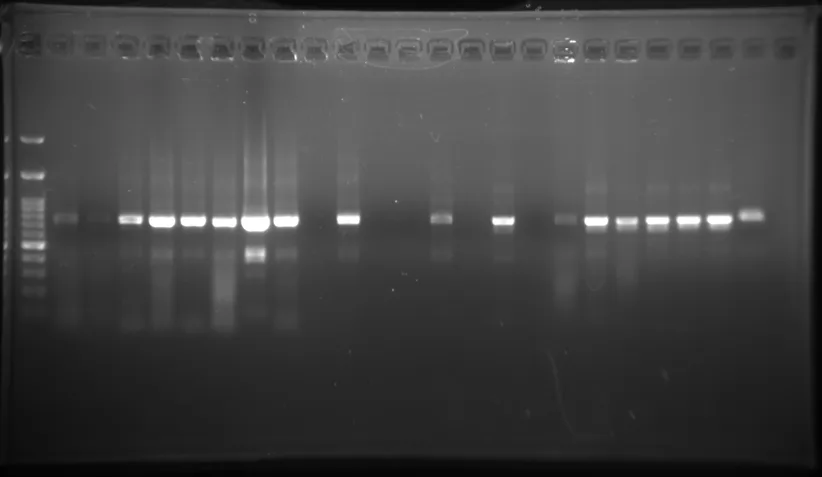
Figure 9. 28 August 2026. The Level 2 ACDI assembly at
three insert-to-vector ratios — the standard reaction, then 1:7,
then 1:5 — at 760 bp. Sixteen colonies went to liquid culture
from a set of reactions that had returned nothing three times running.
Scaled only.
TestThree identical failures, then a stoichiometry change, then two verified clones
The four-module Level 2 assembly closed on a ratio change, not on a sequence change.
The individual modules were fine. Level 2, which joins them, was not.
On 4 August all twenty-four colonies failed and the plates were
re-transformed. On 9 August all twenty-four failed and the Golden Gate
was repeated. On 13 August twenty-four ACDI and twenty-four ABDI
colonies failed and the Golden Gate was repeated again. Nothing about the
design changed between those three rounds, which is the finding.
On 28 August the insert-to-vector ratio was swept at 1:5 and 1:7.
Both returned positives. On 1 September two ACDI clones were confirmed
across three internal junctions at once — pcyA F against
CcaSm3 R at 375 bp, CcaS F against CcaR R at
632 bp, and CcaR F against CcaSm3 R at
661 bp. Three junctions is what distinguishes a complete circuit from
a plasmid that happens to contain one module.
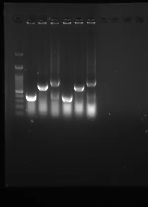
Figure 10. 1 September 2026. Two Level 2 ACDI clones, from
the 1:5 and 1:7 reactions, screened across three internal junctions each:
375, 632 and 661 bp. This is the four-module circuit, joined and
checked at the joins.
Cropped to the gel and scaled. No other adjustment.
LearnThe premise we redesigned on turned out to be wrong
The redesign was undertaken partly because we were afraid of homologous
recombination in B. subtilis. We asked, and were told we were
worrying about the wrong thing. The team's own note:
Module 4: Original terminator cold D (Failure) to B0015. Because
Professor Huang thinks recombination in Bacillus is not the issue,
we changed our terminator back to our original plan, B0015.
So one half of the motive for cycle 5 was retired by a conversation, and
module 4's terminator went back to where it started. The
bkdB cold double terminator survives on disk as the artefact of
a redesign we undid. The other half — expression strength in a new
genetic context — stands, and the rebuilt chromophore module is the
part of the redesign we kept.
The Level 2 lesson is separate and blunter. We repeated an identical
failing reaction three times before changing a parameter. A fourth
repetition would have taught us nothing that the first three had not.
RedesignStop building and start illuminating
With a verified four-module Level 2 plasmid in hand, the next cycle is
not a cloning cycle. It is the first green-light induction run, and it is
described at the bottom of this page.
The protectant and the vector that carries it4 cycles · 1 open
The light switch decides when the cells make something. This track
decides what. Three of its four cycles happened on a computer, and the
most useful thing any of them produced was
a list of five claims we had to retract — one of which had already
gone out as a DNA order.
The cargo is BoPep4, a 23-residue plant elicitor peptide from
Brassica, designed to act on the Arabidopsis receptor kinases
PEPR1 and PEPR2. Alongside it the same vector carries ACC deaminase
(ACCD), a LEA protein, and the chromoprotein AmilCP as a
visible reporter. The peptide is where the design work went, so it is the
thread these cycles follow.
Protectant · iteration 1 of 4Seventeen truncations, and the shortest fragment that still binds
Which of BoPep4's twenty-three residues does the receptor actually need,
and how short can we make the peptide we ask B. subtilis to
secrete?
DesignA complete ladder, not a guess
BoPep4's archetype is AtPep1, whose complex with PEPR1 is solved at
2.59 Å (PDB 5GR8). The two are both 23-mers and the three
residues a 2008 structure–activity study found critical —
Arg9, Ser15, Gly17 — are conserved at the same positions, along with
the C-terminal Asn23. Rather than pick one truncation and defend it, we
built the whole ladder: every N-terminal truncation from 1–23 down to
17–23, docked against both PEPR1 and PEPR2. Seventeen fragments, two
receptors, thirty-four complexes.
BuildHADDOCK and AlphaFold3, on every rung
Each fragment was docked in HADDOCK 2.5 with restraints derived from
its own bound pose, and independently co-folded in AlphaFold3. For every
rung we recorded interface confidence (ipTM), interface predicted aligned
error, buried surface area, salt-bridge and hydrogen-bond counts, and an
explicit ledger of which anchors — Lys7, Lys8, Arg9, Arg11, Lys18,
Asn23 — each cut still retained.
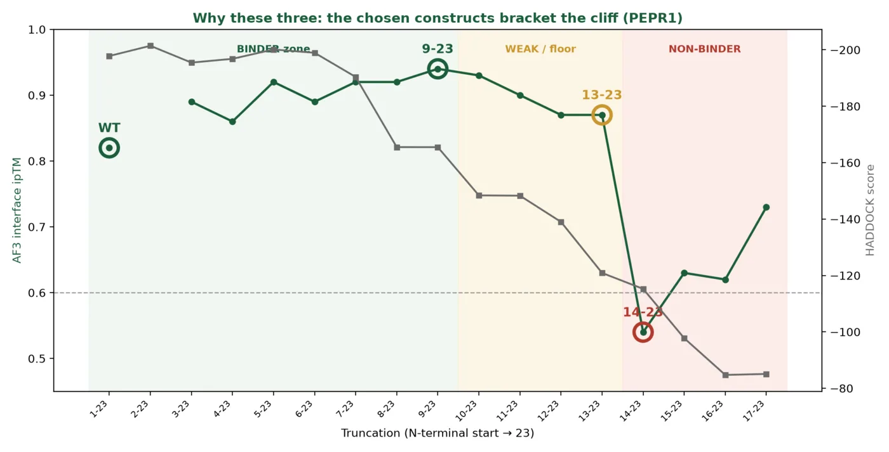
Figure 11. The truncation ladder measured two ways, with the three
fragments chosen for wet-lab testing marked. The collapse between
13–23 and 14–23 is what the three picks were chosen to
straddle.
Generated from our own docking output. Scaled only.
Test9–23 is the best-supported deployable fragment
Confidence is highest at 9–23, and the drop to a non-binder happens between 13–23 and 14–23.
Fragment
Length
ipTM, PEPR1
Interface PAE
Buried area
Call
1–23 (wild type)
23
0.82
1.83 Å
2,754 Ų
binder
9–23
15
0.94
1.41 Å
2,080 Ų
binder
13–23
11
0.87
2.49 Å
1,426 Ų
weak
14–23
10
0.54
8.85 Å
1,346 Ų
non-binder
15–23
9
0.63
5.09 Å
1,194 Ų
non-binder
9–23 keeps Arg9, Arg11, Lys18 and Asn23 and drops only the two
N-terminal lysines. It is also shorter to synthesise and, in the
orthologous AtPep1, the 9–23 fragment is reported to retain full
activity in planta.
LearnChoose the wet-lab set to span the cliff, not to win
With one control and three test slots, the obvious move is to test three
things you believe in. We picked 9–23, 13–23 and
14–23 instead — predicted full activity, predicted reduced
activity, predicted dead. A confirmed dead 14–23 against a working
13–23 pins the cliff to Pro13, which is a result. Three working
fragments would only have told us the model likes short peptides.
RedesignNow make B. subtilis able to translate it
A sequence the receptor likes is worthless if the chassis will not
initiate translation on its mRNA.
Protectant · iteration 2 of 4The first optimisation objective could be gamed, so we replaced it with a bottleneck
Which synonymous coding sequence gives B. subtilis the best
chance of initiating translation on this cassette?
DesignAccessibility, not codon usage
The cassette is fixed — promoter, EEBD, the MF001 ribosome binding
site with its AAGGAGG Shine–Dalgarno core, the SamyQ
secretion signal, the payload, a 6×His tag, then the terminator
— so the only free variable is synonymous codon choice. We optimised
for base-unpaired probability computed from ViennaRNA's
base-pair-probability matrix at 37 °C, over a 236 nt window,
on two regions: the fifteen bases from the start codon, and the
Shine–Dalgarno core. The reference point is a gene that works,
ho1, which scores 0.681.
BuildFifty thousand synonymous draws per construct
Forty-five editable codons, roughly 50,000 random synonymous variants per
payload, each fully re-folded, with restriction sites forbidden across the
edit span. Variants were ranked by a simple sum of the two accessibility
scores.
TestThe top-ranked variant was worse than wild type where it mattered
The best-scoring design lifted one term and left the other more occluded than the wild type.
BoPep4 variant
Start +15
SD core
Sum
Verdict
Wild-type codons
0.396
0.067
0.462
SD occluded
Rank 1 by sum
0.911
0.050
0.960
SD worse than wild type
Best by sum
0.732
0.641
1.374
usable
The same pathology appeared in all four payloads: top-ranked designs with
start accessibility near 0.98–0.99 and a Shine–Dalgarno core
around 0.014–0.055. A sum lets the optimiser buy a large gain in one
term with a total loss in the other, and translation initiation does not
work that way — the ribosome needs both.
LearnOptimise the worse of the two, never the total
The objective function was the bug. Ranking moved to
J = min(start +15, SD core), so a design is only as
good as its weakest term, and the random search was replaced with a
deterministic descent that identifies which codons actually base-pair with
the initiation region and searches that block exhaustively. On BoPep4 the
bottleneck went from 0.067 to 0.528, a 7.9-fold improvement, at a
codon adaptation index of 0.78.
Two further results are worth stating because they contradict standard
practice. Optimising for codon usage alone gives designs with an index of
0.87–0.89 and a bottleneck of 0.054 — the
Shine–Dalgarno core essentially fully occluded in all four cases. And
the published low-GC heuristic we ran as a literature control made one
payload worse than its wild type. The wild-type sequence, separately,
fails a manufacturability rule outright: a seven-adenine run.
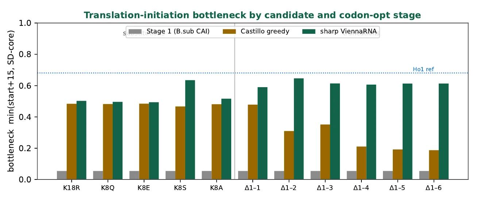
Figure 12. The initiation bottleneck for each candidate under three
strategies. Grey is codon-usage optimisation alone, and it is flat at 0.054
across every candidate despite the highest codon indices in the set. The
dotted line is the ho1 reference.
Rendered from our own report PDF, cropped to the figure. No other adjustment.
RedesignOrder it, then audit the methods that chose it
Eight cassettes went to synthesis in June. Then, with DNA in flight, we
went back over how the sequence had been picked.
Protectant · iteration 3 of 4An audit retracted five claims, and a flood fill showed the tag was on the wrong end
Do the methods that chose this sequence survive being checked against their
own controls?
DesignAudit the pipeline, and simulate what docking cannot see
Two things ran in parallel. A formal methodology audit of every docking
campaign, scored against its own positive controls. And nine
all-atom molecular dynamics runs on the PEPR1 ectodomain — eight with
a peptide bound and one apo — with a four-part acceptance test
written down before any run started.
Build270 nanoseconds, and a 29-page audit
Nine runs of 30 ns each: 270 ns total, 13,500 frames,
25.9 GPU-hours on a single A100, in AMBER ff19SB with OPC water and
0.15 M salt. Runs differ only in the peptide. Separately, a
flood-fill of the receptor surface with a backbone-clearance probe,
measuring how much room a fusion tag has to escape at each end of the
bound peptide, with and without the co-receptor BAK1.
TestThe C-terminal tag destroys the anchor, and passes the test anyway
Every cassette already at synthesis carried a 6×His tag on the end of the peptide that has nowhere to go.
BoPep4's C-terminal Asn23 carboxylate clamps receptor Arg487 with both
guanidinium nitrogens. Fusing 6×His to Asn23 spends that carboxylate
on an amide bond:
Measure, over 1,500 frames
Wild type
With C-terminal 6×His
Bidentate salt bridge to Arg487
100.0 %
0.0 %
Peptide carboxylate in the guanidinium's first shell
100 %
0.0 % (closest 11.65 Å)
Charge-centre separation
3.98 Å
20.07 Å
Backbone RMSD, shared window
1.67 Å
1.12 Å — better
Pre-registered acceptance gate
pass
passes, spuriously
The last two rows are the trap. The tagged peptide's C-terminal half is
more rigid than wild type, because the six histidines lie down on the
receptor surface and add about fifty heavy-atom contacts of their own. Any
metric reading only backbone RMSD or a contact count scores that exchange
as break-even or better. Our own acceptance gate passed it, because the
criterion looked at one terminal oxygen instead of two.
The flood fill says why the same tag on the other end would be harmless.
At the N terminus there are 111 free grid points and a 6.5 Å
path to solvent, unchanged by BAK1. At the C terminus, BAK1 closes the
channel to two grid points and a 20.9 Å escape path
— longer than the tag that has to pass through it.
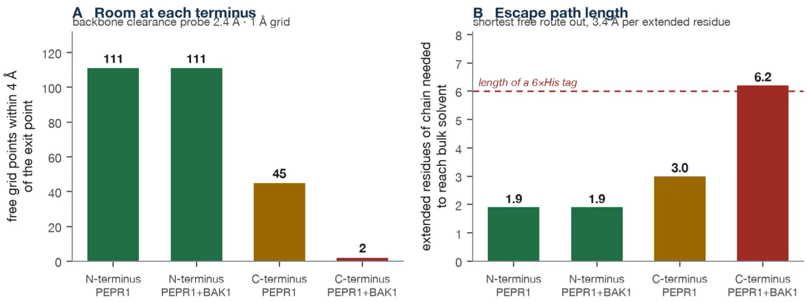
Figure 13. Free space at each terminus, with and without BAK1.
This measurement needs no docking and no simulation, and it is the one
that changed the order.
Our own computation. Scaled only.
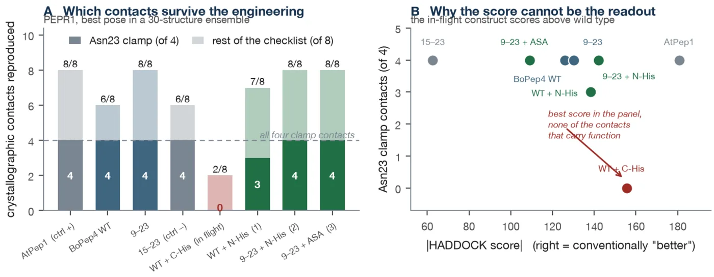
Figure 14. The functional contact against the docking score. The
construct that makes none of the four required contacts scores normally.
This figure is why we stopped reporting docking scores as evidence.
Our own computation. Scaled only.
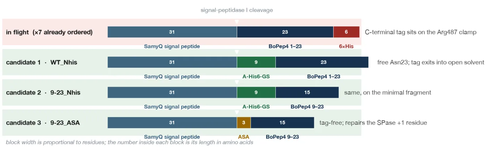
Figure 15. Every BoPep4 cassette drawn to scale. The ones already at
the synthesis house put the tag at the end of the peptide the receptor reads
from; the three ordered on 16 August move it to the other end.
Our own drawing. Scaled only.
LearnFive claims retracted, in writing, on one page
The audit did not confirm the pipeline. It found that most of our docking
runs derived their restraints from the pose they were meant to test, which
makes them refinement and not confirmation; that the resulting clusters
carry no information because every model falls into one; that the
truncation cliff correlates with peptide length at R² = 0.93,
so the score is substantially a length ruler; and that on a sixteen-analogue
benchmark with known activities the protocol's rank correlation is
ρ ≈ +0.05. AlphaFold3 failed the same control.
Claim
Status
Truncation is tolerated to about 9–23
holds
Asn23's free carboxylate clamps Arg487
holds
A C-terminal extension breaks that clamp
new, and strong
K18R is an affinity enhancer
retracted
K8Q is binding-neutral
retracted
Docking independently confirms the AlphaFold3 poses
retracted
Our docking replicates the 2008 structure–activity data
retracted
Docking scores can rank our constructs
refuted
The whole point-mutation programme went with them, and so did tandem
repetition as a strategy: repeating the C-terminal nonapeptide up to eight
times raises the raw score while buried area per residue falls from 127 to
32 Ų and the number of copies actually touching the
receptor saturates at three. A designed negative control that behaved
exactly as a designed negative control should.
We found the C-terminal problem after ordering. Six cassettes were
already at the synthesis house, three of them the same protein, every one
of them tagged at the wrong end. The internal report's own sentence is the
honest summary: we had no construct capable of producing a bioactive
BoPep4.
RedesignReorder with the tag moved, and buy the peptide directly
Three constructs, 2,106 bp, ordered on 16 August with
N-terminal tags: 9–23 + ASA spacer as the
activity lead with a native C terminus, 9–23 + N-His as
the detectable arm, and a full-length N-His arm. Alongside them, and worth
more than any single construct, a chemically synthesised 9–23 peptide
from a peptide house — the only thing that separates
“the peptide does not work” from “we secreted too little
to see”, and the only thing that lets the plant dose–response run
before the DNA lands.
Protectant · iteration 4 of 4 · openInto B. subtilis: the electroporation window closed, the blot did not
Can the constitutive vector put detectable protectant into
B. subtilis without the light switch in the way?
DesignTake the light switch out of the question
Testing a protectant and testing a light switch at the same time means a
negative result explains nothing. So every cargo was also built behind a
constitutive promoter in the kit's shuttle vector,
pSTK-EXP1-sfGFP, which replicates in E. coli and in
B. subtilis. Nine such constructs exist. The chromoprotein arm
is deliberate: AmilCP gives a visible phenotype with no substrate and no
cofactor, so transformation success can be read off a plate.
BuildCompetent cells, and a voltage we had to find
B. subtilis is not easy to electroporate. Cells were grown in
LB with 0.5 M sorbitol to OD600 0.85–0.95, washed four times
in ice-cold sorbitol/glycerol buffer and concentrated fortyfold to
1–1.3 × 1010 cfu/mL. Pulses were
delivered across a 0.2 cm gap at 25 µF.
The first attempt did not survive the first two pulses. At 2.0 and
1.8 kV with the resistance set to infinity, the cuvette arced and the
time constant read zero. Putting 300 Ω in parallel fixed it and
gave a 6.7 ms time constant, and every later run used it.
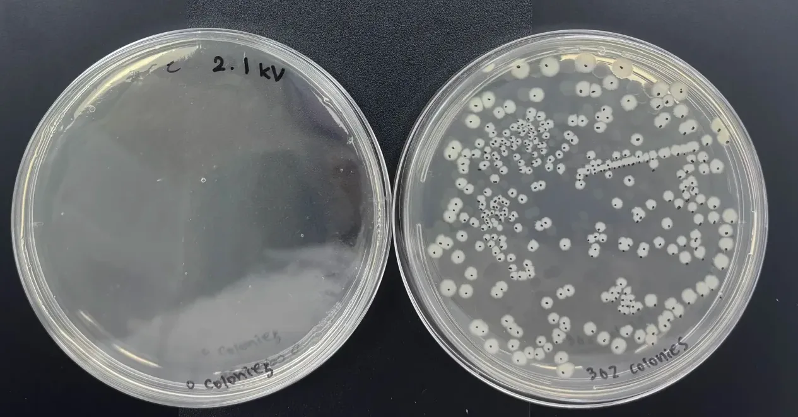
Figure 16. 2.1 kV. Nought colonies on the diluted plate
against 302 undiluted — the counts are written on the plates in the
photograph.
Scaled only.
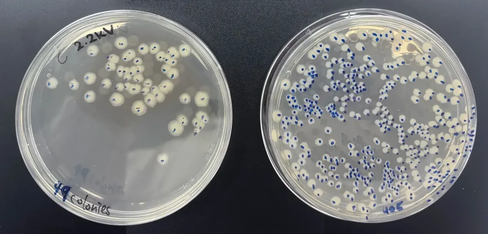
Figure 17. 2.2 kV, 49 against 405 — the best yield of
the first sweep.
Scaled only.
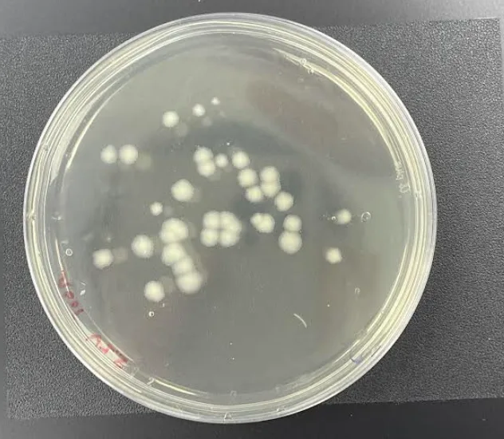
Figure 18. 2.5 kV, about 37 colonies. Past 2.3 kV the
yield collapses.
Scaled only.
TestA working voltage window, and a blot that reads negative
Transformation efficiency rises from 2.0 to 2.3 kV and collapses by 2.5 kV.
Date
Field
Colonies, diluted
Colonies, undiluted
22 May
2.0 kV
31
309
22 May
2.1 kV
0
302
22 May
2.2 kV
49
405
23 May
2.1 kV
1,323 and 1,003
23 May
2.3 kV
1,606 and 424
23 May
2.5 kV
37 and 203
At the protein level the record is thinner and it does not say what we
hoped. Three Western blots were run, on 2, 7 and 24 August. The
24 August blot is the only one whose ladder resolves cleanly enough to
assign a molecular weight, and it carries exactly one band: a sharp,
saturated signal at roughly 41 kDa, in the lane loaded with the
18 August culture. The lane loaded with the 23 August culture
— the material that had actually been sprayed onto plants — is
blank.
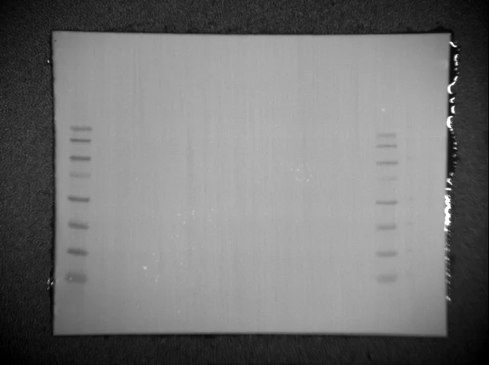
Figure 19. 24 August 2026, the membrane under white light.
Both prestained ladders resolve all eight bands from 180 down to
28 kDa, which is what makes the weight assignment on the next panel
worth making.
Scaled only.
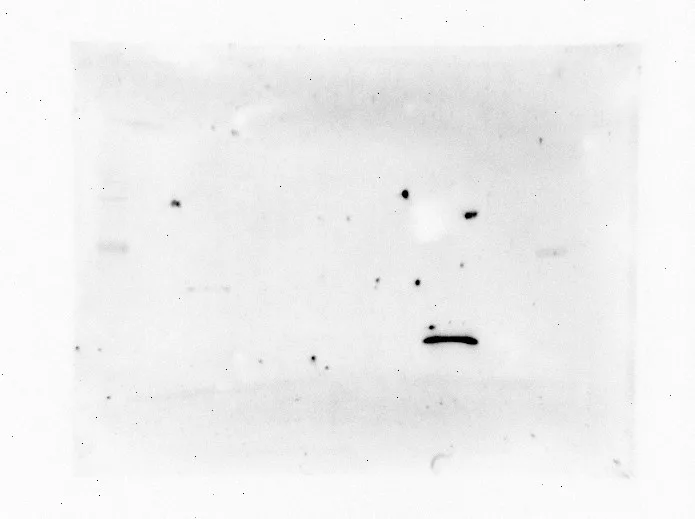
Figure 20. The exposure of the same membrane. One band, at about
41 kDa, in the 18 August lane. The 23 August lane is empty.
The bright patch immediately above the band is an air bubble under the
membrane, and it is a reason to treat even this result carefully.
Scaled only. No brightness, contrast or gamma adjustment.
LearnWe were spraying plants with a culture that had no protectant in it
The team's own minute from 26 August states it plainly:
Originally two day pre-treatment (8/23, 8/24), did Western blot and
found out there's no ACCD in the B Sub. we are spraying the plants
with. The blot is a negative result about the material that mattered
most, and it arrived after the plant treatment had started. The
41 kDa band on the earlier culture sits above the roughly
36 kDa recorded for bare ACC deaminase, which is the direction a
signal-peptide fusion carrying a 6×His tag should move it, but we
never computed the expected mass of the fusion as built, so that is a
reconciliation and not a confirmation.
Two structural problems in our own method surfaced with it. No antibody is
named anywhere in our protocols, and no transfer conditions are recorded,
which means the two blots that did not work cannot be diagnosed. And the
earlier 7 August blot has a band series that slopes steadily across
the gel, so the apparent size change across that concentration series is a
running skew and not a real difference.
RedesignThree things, and one of them was promised and never run
First, record the antibody, the dilution and the transfer conditions, so a
failed blot is a diagnosable event. Second, compute the expected mass of
each fusion as built before running the gel. Third, the comparison this
cycle was designed around and never performed:
transformation efficiency of B. subtilis WB800N against
strain 168. WB800N appears exactly once in our entire lab archive,
in the plan for this cycle, with the Learn field left blank. Every number
on this page is strain 168. That is why this cycle is marked open
rather than closed.
The perfusion reactor7 cycles · 1 open
Seven cycles from a four-part loop that leaked to a machine with three
sensors on one screen. The biology was never the hard part. Every
cycle after the second was stopped by a pump, a fitting, a cap or a
calculation.
The constraints the reactor started from
The pivot of 15 April committed us to a contained vessel, which is a
membrane specification. Beyond that we had almost nothing: nobody on the team
had built a bioreactor. The Dean of Research set out five reactor families
for us and suggested a packed bed with the cells immobilised. We chose
hollow-fibre tangential flow instead, because it separates the organism from
the product by size, which is the containment argument the project needs. That
conversation happened in person and nobody wrote down the reasoning at the
time, which is a gap in our own record.
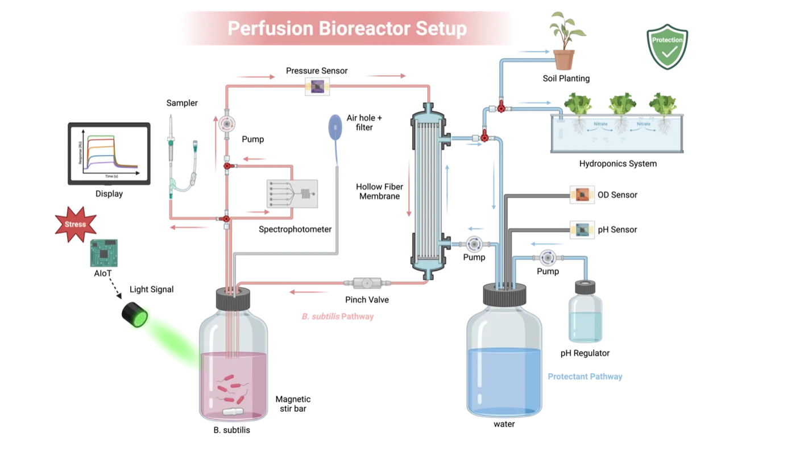
Figure 21. The system the cycles below converge on. The culture loop
runs reservoir → pump → pressure sensor → hollow-fibre module
→ pinch valve and back, with the sampler and the in-line photometer on
it; the permeate leaves through the membrane and goes to the plants. Drawn
4 August 2026.
Our own drawing. Scaled only.
Reactor · iteration 1 of 7Prototype I: the cells barely grow, and the leak proves the membrane holds
Will B. subtilis grow in the simplest loop we can build?
DesignLeave everything off that we cannot justify
Four parts and nothing else: a PES hollow-fibre membrane of about
200 mL lumen volume, a reservoir holding 300 mL of LB, a
peristaltic pump, and a luer valve on the loop for sampling. No stirring,
no aeration, no pH control. We did not know which of those we needed, and
starting with none means every later addition has a reason we can point at.
Adding them together would have meant several things failing at once with
no way to tell which mattered.
Build6 June 2026
Inoculated with 20 mL of overnight culture, pump at 94 mL/min.
TestA flask past 2.4 against a reactor flat at 0.3
The reactor did not grow, the loop was not mixed, and the run ended in a leak.
Both arms were sampled every thirty minutes for eight hours and again at
25 hours, one person staying with it throughout. The flask control
climbed past OD600 2.4. The reactor stayed near 0.3. Worse, the two
numbers taken inside the reactor disagreed with each other —
0.304 in the tube against 0.480 in the reservoir — which cannot
happen in a mixed loop. The run was terminated early when medium leaked at
the pump head, where the tubing flexes most.
One result came out of the run that otherwise failed. Two millilitres of
shell-side liquid spread on an LB plate grew no colonies. The
membrane held the bacteria in, and that plate is still the evidence behind
the only containment claim we make.
LearnThree candidate causes, and we could not afford to test them one at a time
Cells settling out of an unstirred reservoir; sampling from a length of
tube instead of from bulk; and room temperature. All three were cheap to
change and all three were plausible. We changed all three at once and
accepted that we would not know which one worked. That is the wrong way to
run an experiment and we had weeks rather than months. It is recorded here
so nobody reads prototype II as proof that stirring alone fixed it.
RedesignStirring, 37 °C, a reservoir sampling port, and BPT tubing in the pump
The tubing change is a repair. The other three are the cycle.
Reactor · iteration 2 of 7Prototype II reaches plateau in two hours and beats its own flask control
Do those three changes give us a growth curve at all?
DesignThree changes, knowingly confounded
A 200 rpm magnetic stirrer in the reservoir so cells cannot settle; the
sampling port moved to the reservoir outlet, where there is enough volume
for a sample to represent the system; and both arms at 37 °C
instead of room temperature.
Build14 June 2026, pump held at 94 mL/min
The stirrer bar was the largest one in the lab, which may be part of why it
worked as well as it did.
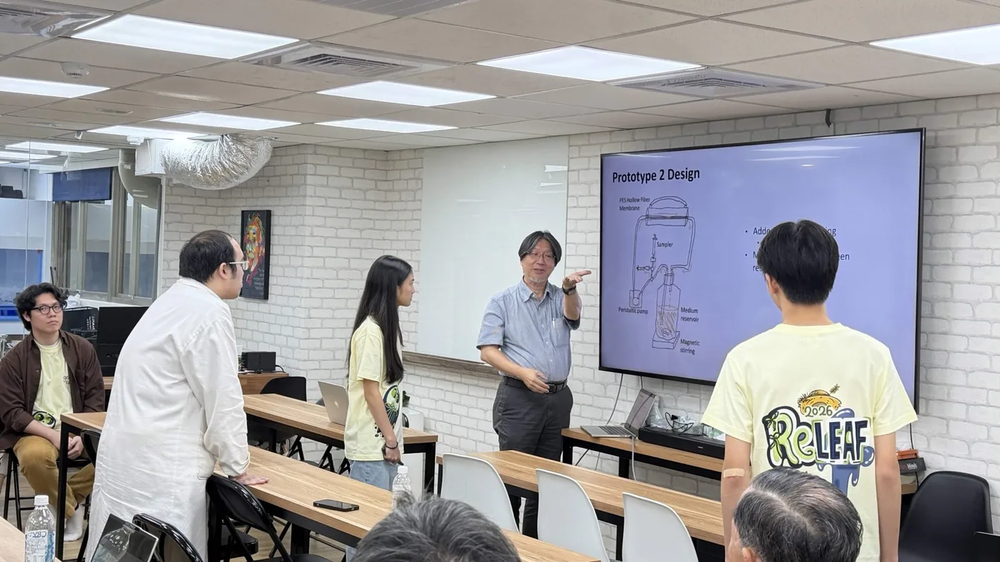
Figure 22. 18 June 2026. The prototype II schematic under
review — membrane, sampler, peristaltic pump, medium reservoir and
magnetic stirring — four days after the run below. The criticism that
came out of this meeting is cycle 4.
Scaled only.
TestFaster to plateau and higher at plateau than the control
The reactor plateaued at OD600 0.8–0.9 in about two hours; the flask reached 0.6–0.8 in about four and a half.
This is more than we expected. The reactor did not merely match its flask,
it beat it on both rate and ceiling.
LearnStirring is essential, and we cannot say it was sufficient
Three variables moved and only one of them is in the headline. Claiming
stirring fixed prototype I would be an overreach, and the honest next
experiment — stirring alone at 22 °C, which is also the
temperature we would actually operate at — is written in the notebook
and has not been run.
RedesignNow decide what size the machine is
A loop that grows cells at 94 mL/min is not the same thing as a
membrane operated at the shear rate it is specified for. Scale became the
next question.
Reactor · iteration 3 of 7Scaling down, because the pump to run the big membrane does not exist in our budget
Do we scale the membrane up to a bigger pump, or the pump down to a smaller
membrane?
DesignTwo strategies, costed on arithmetic
A hollow-fibre membrane has to be run at a wall shear rate high enough to
sweep cells off the fibre wall — for these modules, 2,000 to
6,000 s−1. That fixes the cross-flow you need once the
geometry is chosen, and the two candidate geometries are very far apart.
Strategy A · scale up
Strategy B · scale down
Module
∅63 × 300 mm, ~1,300 fibres
∅10 × 600 mm, 11 fibres
Membrane area
1.3 m²
0.02 m²
Cross-flow at 2,000 s−1
16.25 L/min
129 mL/min
Cross-flow at 6,000 s−1
48.74 L/min
388 mL/min
Pump available
1.5 L/min
within reach
TestA tenfold to thirtyfold shortfall
Strategy A needs 16 to 49 L/min from a pump that tops out at 1.5.
No test was run because none was needed. The arithmetic settles it, and it
settles it by a factor of ten to thirty. We scaled down.
LearnAnd, separately, we had to withdraw a claim about the part we bought
Freezing the specification meant checking every line of it against
invoices instead of against memory, and two of our own recorded claims did
not survive. The old specification said the membrane had a 50 kDa
molecular weight cut-off and blocked outer-membrane vesicles. The module we
actually own is 0.2 µm microfiltration. At that pore size it
passes small vesicles and cell debris, along with the roughly 36 kDa
ACC deaminase that is meant to pass. The barrier is cellular, not
molecular, and we withdrew both claims in writing instead of quietly restating
them.
RedesignCharacterise the module you chose
On 16 August the module was run on pure water across eight flow
settings, twice — once fitted, once replaced by plain tubing with
every valve and fitting left in place — so the module's own pressure
drop could be separated from the plumbing's. Two findings changed how the
rig is operated. The module behaves like eleven parallel 1 mm tubes
with none blocked, and the valves, fittings and flow cuvette account for
46 to 55 % of the total pressure drop. Not subtracting them would
overstate the membrane's resistance by nearly a factor of two, and every
later fouling judgement would inherit the error.
Reactor · iteration 4 of 7Transmembrane pressure on a screen, and a sawtooth explained the same day
Can we see the membrane fouling while it is happening, and not only after the
run?
DesignInstrument the loop before fitting the valve
A pinch valve had already been designed and was waiting to go on. We fitted
the pressure transducer first. A valve on a loop you cannot measure teaches
you nothing, and pressure is the quantity the valve exists to control.
Build12 July 2026
A BP8G-AGA transducer on the retentate side, 0–1 MPa gauge with a
0–5 V output into a 3.3 V board, so a divider is not
optional. It sat on a breadboard, which means the reading was only ever as
steady as that joint.
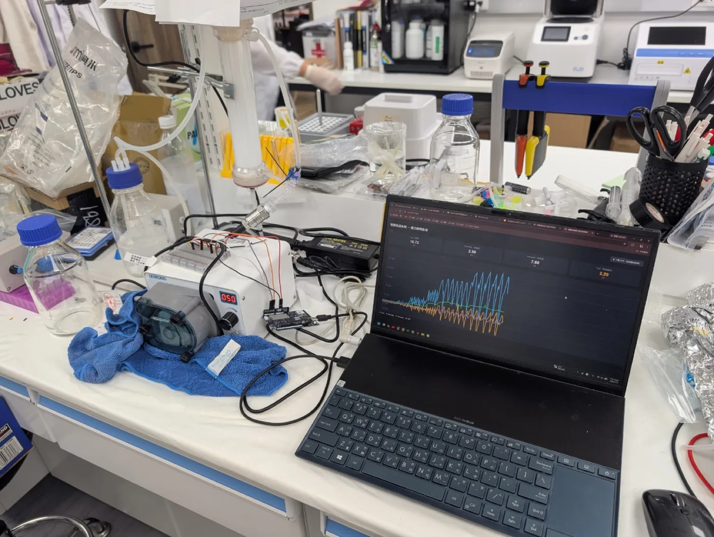
Figure 23. 12 July 2026, transmembrane pressure on a screen for
the first time, the same evening the sensor went on. Feed 16.73, retentate
2.98, permeate 7.66, transmembrane 2.20 psi. The heavy periodic
oscillation on the traces is the finding.
Scaled only.
TestThe oscillation is the pump, identified from a photograph
A sawtooth on the pressure trace, explained within a day, and therefore an artefact we can account for, not noise we cannot.
The trace was posted with the photograph above, and one of our advisers
asked in a single line whether the pulses were the peristaltic pump. They
were. That exchange is what turned an unexplained oscillation into a
documented artefact, and it is why the photometer later ended up
downstream of the pump, where the pulse has line length to smooth out
in.
LearnAnd the error bar on the sensor is as wide as the signal
The transducer is 1.0 % of a 0–1 MPa full scale, which is
±10 kPa, against an operating transmembrane pressure of about
30 kPa. It was also never zeroed against atmosphere, so the absolute
values are suspect even though the shape is not. Tight pressure control
wants a lower-range sensor, and that is a purchase we have not made.
RedesignNow fit the valve, and choose what actuates it
With pressure visible, the valve has something to close the loop against.
Reactor · iteration 5 of 7The pinch valve actuator, decided on a criterion written before we scored anything
What actuates a pinch valve on a loop full of live engineered bacteria?
DesignWrite the criteria first, so they cannot be bent toward the answer
Four criteria, agreed before any option was scored: does it hold when power
is cut; how much holding force does it have against permeate pressure; can
we build it from parts already in the lab; and how much firmware does it
need.
BuildStepper, servo and solenoid, scored out of five
We had already built a stepper-driven pinch valve. The solenoid is recorded
as unscored, not as zero, because we could not source one in time and
a nought would have misrepresented it.
TestCriterion one decided it alone
A stepper releases when it loses power. The loop is full of live culture.
Holding on power loss is a safety property, so it outranks the other three
and the other three did not need to be weighed. The servo stays tight. We
replaced the valve we had already built.
LearnAnd the criterion we cannot yet score against
Nobody has measured what pressure the valve actually needs to hold. The
servo fitted is a spare from a robotics kit, not a part chosen for
this duty, so the second criterion — holding force against permeate
pressure — was scored on judgement and not on a number.
RedesignPut the whole thing together as one machine
Reactor · iteration 6 of 7Assembling the full rig, and losing the assembly order to nineteen photographs
Where does each instrument go in the loop, and can the build be reproduced
from what we recorded?
DesignPlacement decided by what each sensor is fighting
The hollow-fibre module goes in with its lumen ports facing up, so air
clears on fill instead of sitting in the fibres. The photometer goes into
the return leg, downstream of the pump, which is the longer plumb.
It is downstream because the pump puts a sawtooth into the flow — the
one we saw in the pressure trace on 12 July — and putting the
beam after the pump gives that pulse some line length to smooth out in.
Upstream would have been shorter, easier and worse.
BuildFour days, and the rig ran
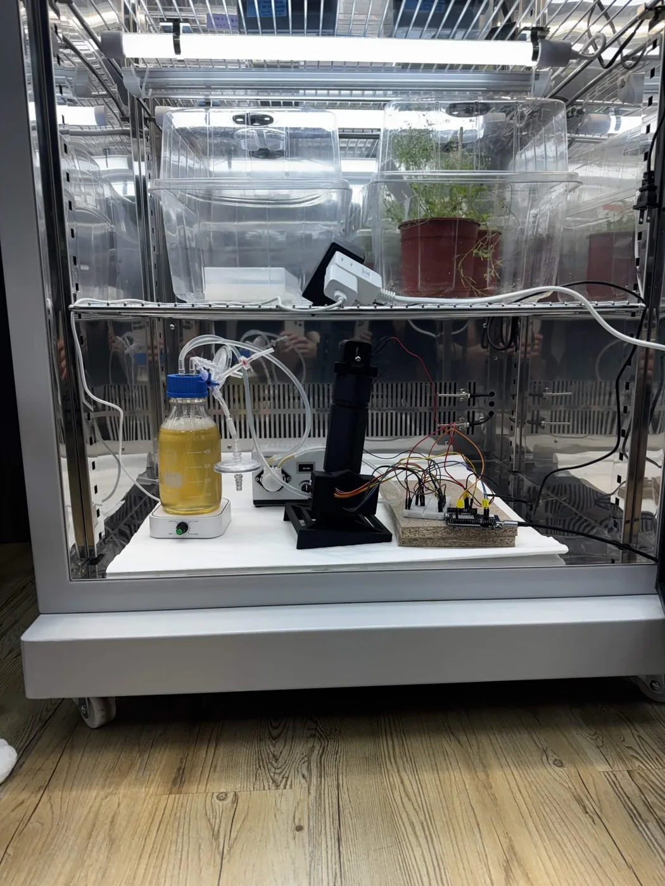
Figure 24. 20 July 2026, the machine running. Serum bottle of
culture on the stirrer, luer sampler at the cap, peristaltic pump, and the
printed photometer tower with its flow cuvette — all on the bottom
shelf of the incubator, with the plants under test on the shelf above. The
434-hour run started the next day.
Scaled only.
TestThe rig works; the record of building it does not
Nineteen photographs across four days, with gaps, duplicates and no captions, and we cannot reconstruct the assembly order from them.
This is a documentation failure and we are counting it as a cycle because
it changed a process. Nobody agreed what to photograph before starting, so
nineteen images exist and none of them is a build step.
LearnA shot list is part of the build, not part of the write-up
A future team rebuilding this rig from our wiki would get the bill of
materials from Hardware and would not
get the order things go together in. The next build is photographed against
an agreed list.
RedesignMake it run without a person standing over it
Reactor · iteration 7 of 7 · openVersion six: two of the three changes have already been rejected
Can the reactor run unattended, and can it be handed to somebody who did not
build it?
DesignThree changes aimed at the same goal
Everything that currently requires a person is a peristaltic pump that
cannot be driven from the controller, a serum bottle that has to be opened,
and sensors that cannot get into it. Version six proposed a magnetic pump
drivable from the Arduino, a clear rectangular reservoir borrowed from
computer water-cooling with ports at top and bottom, and dissolved-oxygen
and pH probes through the cap.
BuildOne accepted, two rejected
Change
Outcome
Why
Magnetic pump
rejected
Tops out below 200 mL/min against a recommended operating point of 263 mL/min. It also cannot lift liquid out of the serum bottle.
PC-cooling reservoir
shelved
Designed to get round the magnetic pump's head problem. With the pump rejected, the reason for it went too.
Cap bored for the probes
built
A two-half cap that clamps around each cable and screws shut, so no cable has to be cut and rejoined.
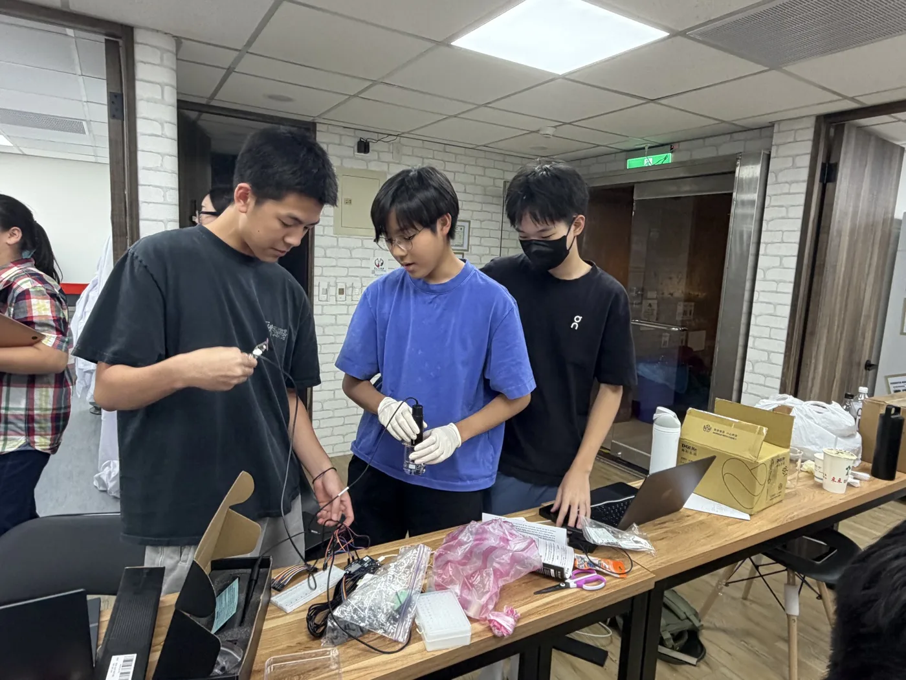
Figure 25. 5 August 2026, the first readings off both probes.
Both read. Neither is on the reactor.
Scaled only.
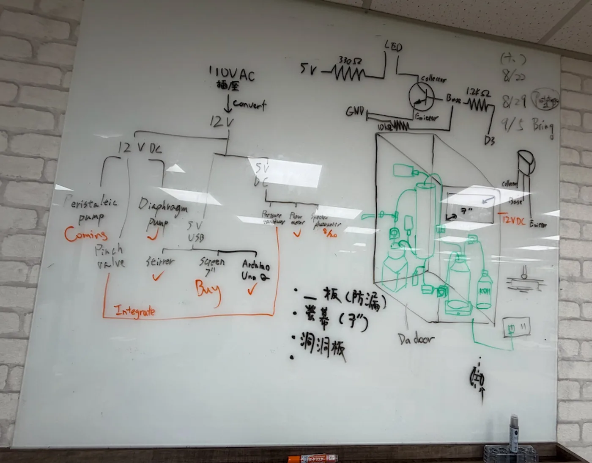
Figure 26. 23 August 2026. Version six worked out as a power
tree — mains to 12 V to 5 V, with each load assigned to a
rail — plus the LED driver and an enclosure with a screen and a
door. This is the point at which the reactor stops being a rig.
Scaled only.
TestThe probes read, and neither is deployable
Neither probe body survives autoclaving, and the reservoir closes with a rubber septum.
This is a sterility problem wearing a mechanical problem's clothes.
Version six's enlarged cap holes solve how the probe gets through the
cap; they do nothing about how it gets through the cap sterile. Three
routes are untested: an O-ring seal on a drilled cap, a chemical soak before
insertion, or a flow cell on the loop so the probe never enters the vessel
at all. Neither probe has a fixed-point calibration or any repeatability
data, so neither counts as calibrated.
LearnAutonomy is blocked on sterility, not on electronics
We went into version six expecting the hard part to be driving a pump from
a microcontroller. The hard part is putting a non-autoclavable probe into a
sealed vessel without contaminating it, and no amount of firmware
addresses that.
RedesignOpen
The flow-cell route is the one we would try next, because it moves the probe
out of the sterile boundary instead of trying to get it through the boundary
cleanly. Nothing has been built.
The in-line photometer6 cycles · 1 open
The strongest track on this page, and the only instrument here that nobody
sells. It exists because of one line written on 16 May: we need to
measure flow rate, and how much B. sub. Two of its six cycles were
closed by the same mistake made twice, and the sixth has not been built.
It reads optical density straight from the flowing culture through a short-path
flow cuvette, with a reference channel split off before the sample so drift in
the source appears in both readings and divides out. Nothing is opened and no
sample is withdrawn. The optical path, the printed mounts, the housing and the
firmware were all built by the students. The specification and bill of materials
are on Hardware; the cycles are here.
Photometer · iteration 1 of 6Everything adjustable, and the readings were unusable
Where do the optics need to sit?
DesignMake every component movable, because we did not know
None of us knew where the source, lens, cuvette and sensors should sit
relative to each other, so the first build put every one of them on a
printed rail where it could slide. The beam ran horizontally through the
flow cuvette.
TestTwo faults that made each other worse
Data that fluctuated far too much to use.
Gas bubbles formed inside the cuvette and sat in the beam. A bubble does not
add noise around a value; it steps the reading. And the lens and
beamsplitter mounts were loose enough that alignment drifted while we
watched it, so the baseline moved underneath the steps.
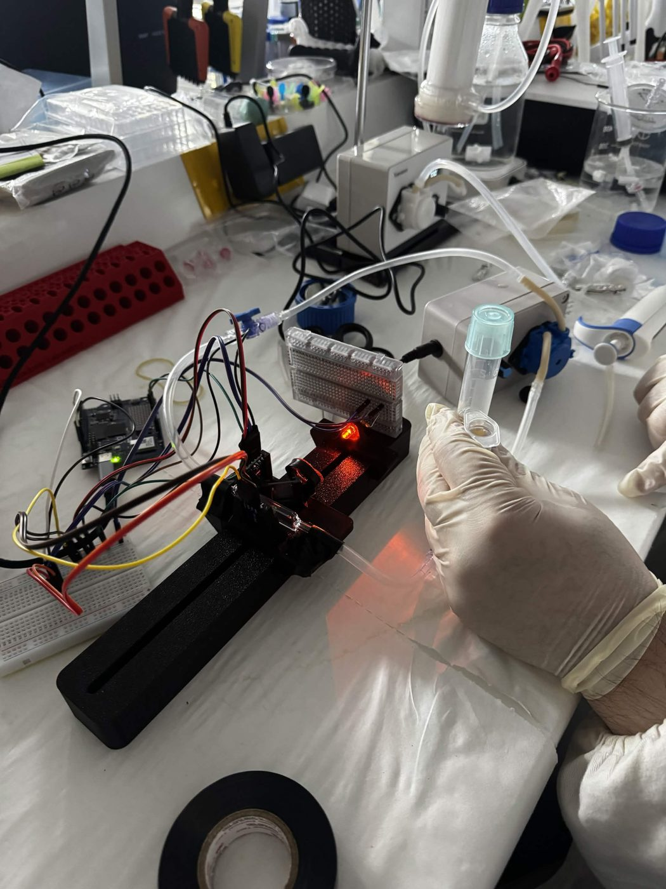
Figure 27. Iteration 1. Every optic independently adjustable
on a horizontal rail, and bubbles collecting in the flow cuvette.
Shared with Hardware; same file, two arguments.
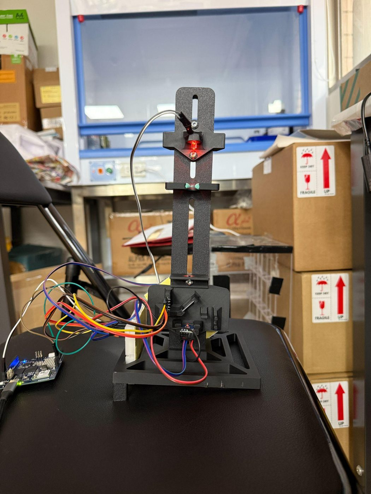
Figure 28. Iteration 3, three builds later. Tilted ten degrees
so bubbles are driven toward the outlet instead of hanging against the
cuvette wall.
Shared with Hardware.
LearnLet physics move the bubbles
Bubbles rise. Putting the cuvette at the bottom of a vertical column takes
them out of the beam with no mechanism and no maintenance. A pair of luer
valves and syringes lets gas be bled from the line on demand when that is
not enough.
RedesignVertical, cuvette at the base, every tolerance tightened
Photometer · iteration 2 of 6Zeroed against the wrong thing, and the optics took the blame
Does it read correctly on a sample whose value we already know?
BuildVertical, tightened, with a way to bleed gas
The whole assembly rotated upright with the cuvette at the base, tolerances
tightened, and a dual luer valve and syringes fitted so gas could be pulled
out of the line directly.
TestA known turbid standard, read wrong by about 20 %
The instrument was not the problem. The procedure was.
We blanked, read medium alone, then read medium with titanium dioxide as a
sample of known turbidity. The reference channel held steady across both
readings, so the ratiometric design was behaving. The value was still about
20 % out.
We had blanked against growth medium instead of clear water. Medium already
absorbs light, so the zero was set at the wrong place, and every reading
after a bad blank carries that error however good the optics are. The
reference instrument we validate against is itself calibrated on distilled
water, so the two were reporting absorbance relative to different baselines.
Most of the disagreement we had been attributing to our optics was a
procedural artefact.
LearnA calibration error looks exactly like a hardware error
This is the first of two blanking failures on this instrument, and the
second one is three cycles below. Both times the reading was wrong, both
times the optics were fine, and both times the first instinct was to
rebuild something.
RedesignBlank on distilled water, and read two concentrations instead of one
Photometer · iteration 3 of 6Tilted ten degrees, and the response does not double when the sample does
Does the reading scale with concentration?
DesignTilt, so bubbles are driven out instead of merely allowed to rise
A vertical channel lets bubbles rise. A tilted one actively directs them
toward the outlet instead of letting them hang against the cuvette wall.
TestDoubling the sample gave 1.56×, not 2×
Two points cannot distinguish real Beer–Lambert behaviour from a wrong transform.
Blanked on water this time. Medium read zero, one millilitre of titanium
dioxide read 0.3712, two millilitres read 0.5785 — a factor of 1.56
where a factor of 2 was expected. Either that is genuine at this path
length, or our transform is wrong, and two points cannot tell us which.
Two things we could not explain at all. Absolute light dropped hard between
builds, from 660 to 137 lux, and we did not write down what changed in
the drive or the optics. And the reference channel moved between two
readings taken minutes apart, which a reference should not do.
Against the benchtop reference on a single paired reading this build gave
0.431 to the reference's 0.467, a difference of 7.7 %. That is the
8 % figure quoted elsewhere on this wiki, and it belongs to this build
and to one reading.
LearnTwo points is a demonstration; a ladder is a measurement
Nothing about linearity, range or repeatability can be claimed from two
concentrations, and the unexplained lux drop means we could not even
compare this build to the last one on absolutes. A full dilution series was
the only way forward, and it took another two months to run.
RedesignLock every position, line the mounts, seal the light path
Photometer · iteration 4 of 6Four times high on the reactor, and the blank was to blame again
Does the finished instrument agree with a benchtop spectrophotometer on the
real machine?
BuildLocked, lined and sealed
Component positions fixed at their aligned defaults instead of left
sliding, mounts lined with TPU so the glass is not scratched, and the light
path enclosed in snap-in covers to block room light. Structural support was
added to the stand so the tilt angle would not change under the weight of
the tubing.
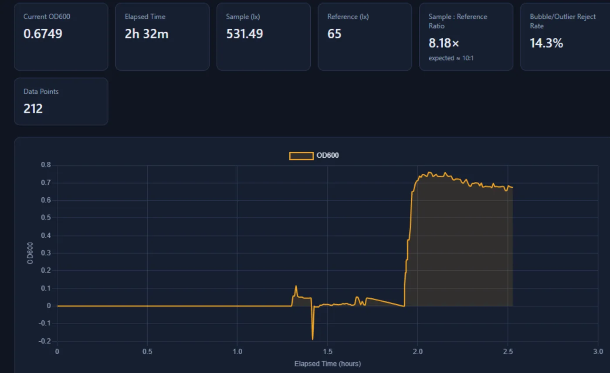
Figure 29. 19 July 2026, 19:06. The dashboard frame the team kept
because it is where the correction started — the reading that turned
out to be roughly four times the benchtop value on the same sample. The
sample-to-reference ratio reads 8.18× against a design figure of about
10:1. The paired benchtop value is not in this frame.
Scaled only.
TestOne whole cycle inside a single evening
An offset, not a drift — so the shared term was the blank.
At 18:41 the instrument gave its first sensible live reading on the loop. By
19:06 we had found ourselves that it was reading about four times the
benchtop value. A loose rail drifts, and this was a constant factor, so the
rail was not it. A developer mode written for exactly this purpose streams
both raw channels; both read cleanly, which left the blank as the only term
they share. At 19:07 that became the hypothesis. The flow cuvette cannot be
cleaned while it is in the loop, so the blank had been taken through a dirty
window.
At 20:35 the fix was proposed — let the operator type the blank in by
hand — and at 20:54 it was implemented. The reading came back 0.100
against the benchtop's 0.149. No longer four times high. Now low, and past
the 10 % agreement target we had set beforehand, in the other direction.
LearnThe same failure, twice, and the second time we recognised it in twenty-five minutes
Iteration 2 blanked on medium. Iteration 4 blanked through a
cuvette that cannot be cleaned in line. Both are the same class of error and
the instrument has no way to detect either, which is a design gap rather
than an operator gap. What did improve is the diagnosis: the first blanking
failure took a rebuild to find, and the second took twenty-five minutes,
because by then there was a developer mode that could rule the optics out.
RedesignStop reading one point against one point
One paired reading says nothing about linearity, range or repeatability. The
next cycle is a full ladder, and a run long enough to be worth calibrating.
Photometer · iteration 5 of 6Eighteen days unattended, a fifty-nine-point calibration, and a pump that died in front of it
Does the instrument hold up over weeks on its own, and does it agree with a
commercial one across the range a culture actually occupies?
DesignTwo questions the earlier cycles could not answer
Unattended endurance, and linearity. They need different experiments: a long
run on real culture for the first, and a scattering standard for the second.
Titanium dioxide was chosen over cells deliberately — it does not grow,
it settles slowly, and it is consistent between batches, so what it measures
is the instrument and not the biology.
BuildA logger, a live dashboard, and a stirred 400 mL loop
One reading every ten minutes, written to CSV, served on a dashboard over
the local network. There is no alerting of any kind; it only draws. For the
calibration, titanium dioxide was added a milligram at a time from 2 to
60 mg into a stirred recirculating loop, with both instruments read at
every point. The benchtop reference is specified only to about OD 1 and
we kept adding past it deliberately, to see how each instrument fails
outside its own specification.
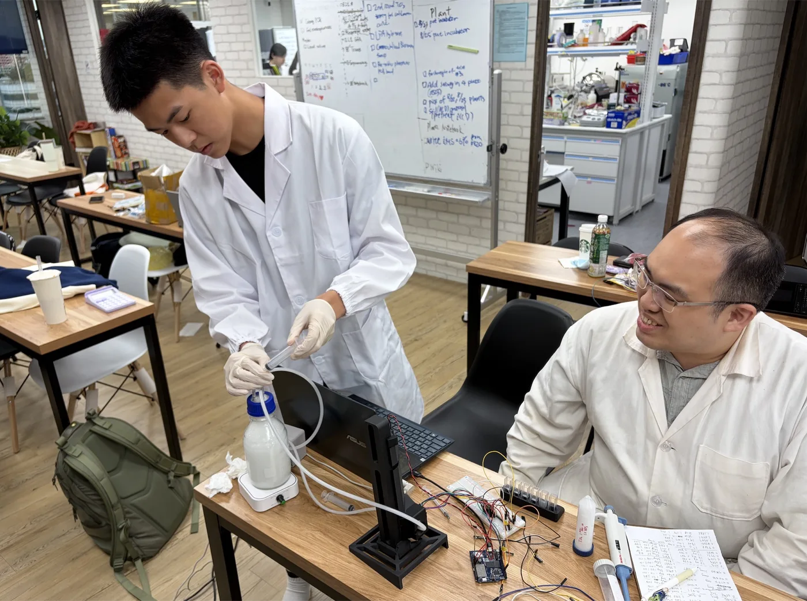
Figure 30. 23 August 2026, the calibration being run: fifty-nine
additions, both instruments read at every point, values written down by
hand as they came.
Scaled only.
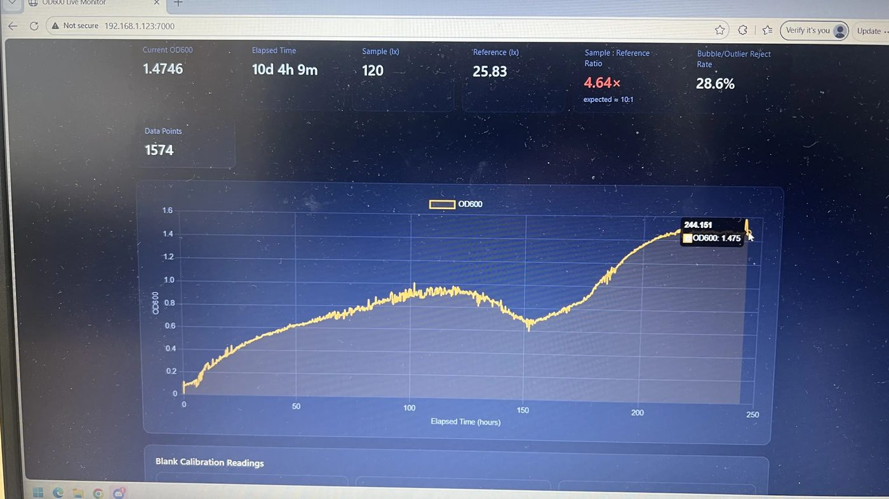
Figure 31. The same run at ten days and four hours in, 1,574 points
logged. The dip and recovery around 150 hours is visible, and the
sample-to-reference ratio is flagged in red at 4.64× against a design
figure of about 10:1.
Shared with Hardware.
Test434 hours, 2,671 valid readings, and agreement on the 1:1 line below OD 1.2
Eighteen days unbroken with nothing opened, and a student-built instrument sitting on the same line as a commercial one across the band a culture occupies.
The long run · 21 July to 8 August 2026
Duration, unbroken
434.2 h (18.1 days)
Readings logged / valid
2,720 / 2,671
Samples withdrawn from the loop
0
Previous longest run
4.5 h
Growth rate, first phase
0.0329 h−1 (R² 0.891, n = 204)
Plateau
OD600 1.454
Hardware quotes 336 hours and
2,132 points for this run. That is the same run read off the live dashboard
at fourteen days, which is where the traced figure on that page comes from.
The complete log is the 434 hours above.
Calibration · 23 August 2026
Our photometer
Benchtop reference
Linear fit against mass, 2–30 mg
R² 0.9967, SD 0.027
R² 0.9982, SD 0.021
Above 30 mg, past the reference's own spec
R² 0.981, smooth compression
R² 0.850, SD 0.120
Negative steps across the series
1 of 59, worst −0.011
5 of 45, worst −0.385
Against each other, OD ≤ 1.2 (n = 20): y = 1.018x − 0.031, R² = 0.9951, residual SD 0.024 OD, largest residual 0.064. Bland–Altman bias −0.021 OD, limits of agreement −0.069 to +0.028.
That residual of 0.024 OD is the same size as the scatter in the long
run outside its fault window, which is what licenses reading the growth
curve at face value. Past the reference's specification the two instruments
fail differently, and ours fails better: smooth monotonic compression, which
is correctable, against jumps, which are not.
LearnThe instrument caught the reactor failing, and caught itself failing too
Between roughly 240 and 300 hours the scatter on the trace grew by an
order of magnitude — residual SD of 0.105 and 0.171 against
0.019–0.030 everywhere else — and over the same hours the
reference channel fell from 25.8 lux to 9.3, bottoming at 1.4. The
first hypothesis was contamination. That was wrong. The recirculation pump
had failed, and swapping it knocked the optical axis. So part of that window
is the reactor failing and part of it is us, and the reason we can tell the
difference is that the instrument's own reference channel flagged the window
as untrustworthy while it was happening.
We would rather put it that way than the way we first wrote it, which was
that the photometer detected the pump dying. It did log the window, nobody
was rostered to look at the trace daily, and the fault was noticed late.
RedesignTwo experiments, and a cheaper instrument
Titanium dioxide gives linearity, not a cell count, so the calibration has to
be repeated on cells: culture drawn at several mid-run points and read on
both instruments, over OD 0.05 to 1.2, with three repeats and a stated limit
of detection. Plate counts should run alongside optical density, because
optical density cannot separate lysis from sporulation from settling. And
then the instrument needs to get cheaper.
Photometer · iteration 6 of 6 · openHow much of the optical train is actually load-bearing
Can the instrument be built for a farmer's budget by removing optics rather
than by buying cheaper ones?
DesignDelete the two most expensive components and see what breaks
The intended user farms around half a hectare and has little tolerance for
unit cost, and the target unit cost for the packaged reactor is still an open
item. The proposal is to remove the paralleling lens and the beamsplitter and
rebuild around the flow cuvette and the two sensors alone, targeting roughly
NT$5,000 for the instrument.
The reason this is a cycle and not a saving is that the beamsplitter is what
makes the reference channel possible, and the reference channel is the whole
basis of the ratiometric design — it is why source drift divides out,
and it is what flagged the fault window in cycle 5. Removing it means
finding another way to reject drift, or accepting that the instrument can no
longer run for eighteen days unattended. That trade is the experiment.
TestNot run
Nothing has been built and no cost has been verified.
This cycle is on record only as a plan. The stopping condition, if it runs,
is the one the calibration in cycle 5 established: a residual standard
deviation against the benchtop reference no worse than 0.024 OD below
OD 1.2, and a reference channel stable enough to survive a run of days.
If a lens-free build cannot hold both, the saving is not available.
LearnOpen
Nine design decisions that exist only because a test failed
Not a summary. Each of these would not be in the project if a measurement had
come back the way we expected.
The decision
The failure behind it
Cycle
The whole circuit is built in the SubtiToolKit, not in MoClo 2.0
Golden Gate under MoClo returned no colonies at all
The tracks are coupled, and two couplings did real work
These are not four independent loops. The photometer only matters because the
reactor runs continuously, and the reactor is only worth running continuously
because the photometer can watch it — which is why the pump failure appears
in both tracks, once as a reactor fault and once as the instrument that recorded
it. In the other direction, the reactor's pressure trace decided where the
photometer goes in the loop. On the molecular side, the circuit track and the
protectant track share the output module: the same cargo, behind a light-driven
promoter in one and a constitutive promoter in the other, precisely so that a
negative result in the light-driven version can be attributed.
Decisions we have not made
Which chassis. Every number on this page is B. subtilis
168. The protease-deficient WB800N is named once in our archive, in the plan
for cycle E4, with the result field blank.
How the probes get in sterile. Dissolved oxygen and pH both read on
the bench and neither is on the reactor. This blocks unattended operation
more than any electronics problem does.
Whether the membrane fouls. No fouling measurement exists. The
criterion is settled — watch resistance instead of pressure, and
clean at twice baseline — but the flush-and-reblank that would have
produced the first datum was never run.
What the instrument costs. The target unit cost for the packaged
reactor is an open item, and cycle P6 exists to
attack it.
Cycle twenty-three is the first induction run, and here is what would end it
Everything above is about whether the DNA is correct and whether the hardware
can hold a culture. Neither is the project's claim. The claim is that green
light sets how much protectant a culture makes, and we have not measured
that once.
The next cycle is therefore not a cloning cycle and not a hardware cycle. Its
inputs now exist: a sequence-verified four-module Level 2 plasmid confirmed
across three junctions on 1 September; a light array that holds twenty-four
cultures under six defined conditions; and an in-line photometer with a
calibration good to 0.024 OD against a commercial instrument below
OD 1.2.
Design
A dose–response of PcpcG2 output against green photon
flux, with the AmilCP chromoprotein as the readout so the result is visible
without an assay, run against a red-light and a dark control.
Build
The verified ACDI plasmid in B. subtilis, on the LED array at
its six calibrated intensity tiers, four replicates each.
Test
Absorbance per unit optical density at each light level, sampled over a
time course, with the dark control as the floor.
The stopping condition
A monotonic, statistically separable increase in output across at least
three light levels, with the dark and red-light arms at the floor. Anything
less and the cycle is not finished.
If that comes back flat, the first thing to check is not the circuit. It is
whether the chassis is making phycocyanobilin at all, because without the
chromophore CcaS cannot respond to anything — and the chromophore module
is the one whose first build sequenced blank, and the only module we rebuilt
from scratch.
References
Haller, D. J., Castillo-Hair, S. M. & Tabor, J. J. (2025).
Optogenetic control of B. subtilis gene expression using the CcaSR
system. Methods in Molecular Biology 2840, 1–17.
Castillo-Hair, S. M. et al. (2019). Optogenetic control of
Bacillus subtilis gene expression. Nature Communications 10,
3099.
Tang, J. et al. (2015). Structural basis for recognition of an
endogenous peptide by the plant receptor kinase PEPR1.
Cell Research 25, 110–120. PDB 5GR8.
Pearce, G., Yamaguchi, Y., Munske, G. & Ryan, C. A. (2008).
Structure–activity studies of AtPep1. Peptides 29,
2083–2089.
Cui, J. et al. (2024). AtPEP1(9–23) retains the activity of
AtPEP1(1–23). Antioxidants 13, 549.
Lorenz, R. et al. (2011). ViennaRNA package 2.0.
Algorithms for Molecular Biology 6, 26.
Where the rest of this work lives.
Full protocols are on Experiments. Device
specifications, bills of materials and the reproduction sheets are on
Hardware. The part definitions are on
Parts, the calibration method on
Measurement, and the day-by-day record in the
wet lab and
dry lab notebooks. Cycles are documented here
and nowhere else, so a reader looking for iteration history should not have to
hunt for it.